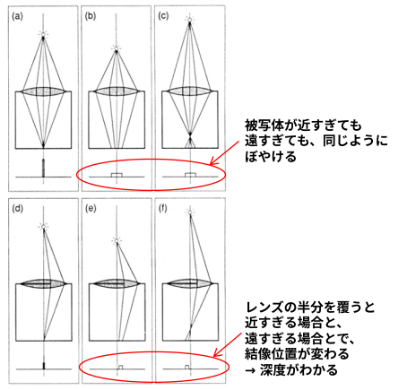

「Good-Turing（グッド・チューリング）推定」を世に初めて広く紹介した論文。
第二次世界大戦中、ブレッチリー・パークでドイツ軍の暗号「エニグマ」を解読するため、天才数学者アラン・チューリングとその助手であったグッドが考案した手法がベースになっています。
未観測の事象の確率（Missing Mass）を「1回だけ観測された種類数（シングルトン）」 (N1) を用いて(N1/N) とスマートに推定する数式（チューリング公式）が公に示された。
グッド・チューリング推定により、訓練例のうち一度しか出現しないものの割合は、まだ観測されていないものにどれだけの確率質量が属するかを示している。
未観測の文は主として偽であるという仮定のもと、適切に較正されたモデルは幻覚を起こさざるを得ないと論じました。
未観測の領域に構造を設けることで、この説明を拡張します。未観測の文の一部は候補フロンティアを形成し、真である可能性が中程度です。残りは任意領域にあり、未観測の文の大半が偽です。モデルがフロンティアに割り当てる確率は、発見にも幻覚にもなり得ますが、従来の理論ではこの2つを区別していません
材料科学と調節ゲノミクスにおいて、訓練セット内のモノファクト率を直接操作したところ、2つのオープンウェイトモデルファミリー、サンプリング戦略、推論予算のいずれにおいても、モノファクトが多いほど発見数が一貫して増加することがわかりました。
alphaXiv の解説
これは能力についての説明であり、発見が実際に起こるという保証ではありません。示されている結果は上限であり、実際にはフロンティアのパラメーターを推定するのは困難です。
ここでのフロンティアは理論上の構成概念であり、実験で測定されたものではありません。

一見すると、最先端のAI（大言語モデル）に関する研究と、1990年代の光学・コンピュータビジョンに関する研究であり、全く異なる分野の論文のように思えます。しかし、研究の視点やアプローチにおいて、以下のような本質的な共通点（アナロジー）を見出すことができます。
LLMの科学的発見能力を「欠損確率質量（Missing Probability Mass）」の問題、つまり「学習データ（既知）には直接含まれていないが、背後に存在する真実」を推測する問題として捉えています。一度しか現れない超希少なデータ（モノファクト）を足がかりに、モデルが未知のフロンティアを埋めていく構造を分析しています。
通常のカメラでは、レンズの異なる部分（サブリージョン）を通過した光はすべてセンサー上で混ざり合い、奥行きという「失われた情報」になってしまいます。この論文では、プレノプティックカメラを用いて「光の光学的な構造（光線空間）」を分析し、混ざり合う前の視差データを分解することで、隠れた「3次元の奥行き」を推定しています。
「ひとつの混然一体となった学習データ」から、モデルの内部表現によって、材料科学やゲノミクスといった「異なる科学ドメインの発見フロンティア」を多角的に切り出しています。
「単一のメインレンズ（Single Lens）」しか使っていないにもかかわらず、そのレンズの口径内を通過する連続的な視点の集合（Continuum of viewpoints）を分離して取得しています。
高度な推論ステップ（Reasoning Budgets）を増やさなくても、適切な「モノファクト率」が担保されていれば発見能力が向上することを示しており、複雑な推論のハメ合わせ（対応付け）に依存しない発見の仕組みを示唆しています。
従来の2眼ステレオシステムで最も難解だった「左右の画像のどの点とどの点が対応しているか」を探索する対応付け問題（Correspondence problem）を最小限に抑え、よりシンプルに深度を推定できる点をメリットとしています。